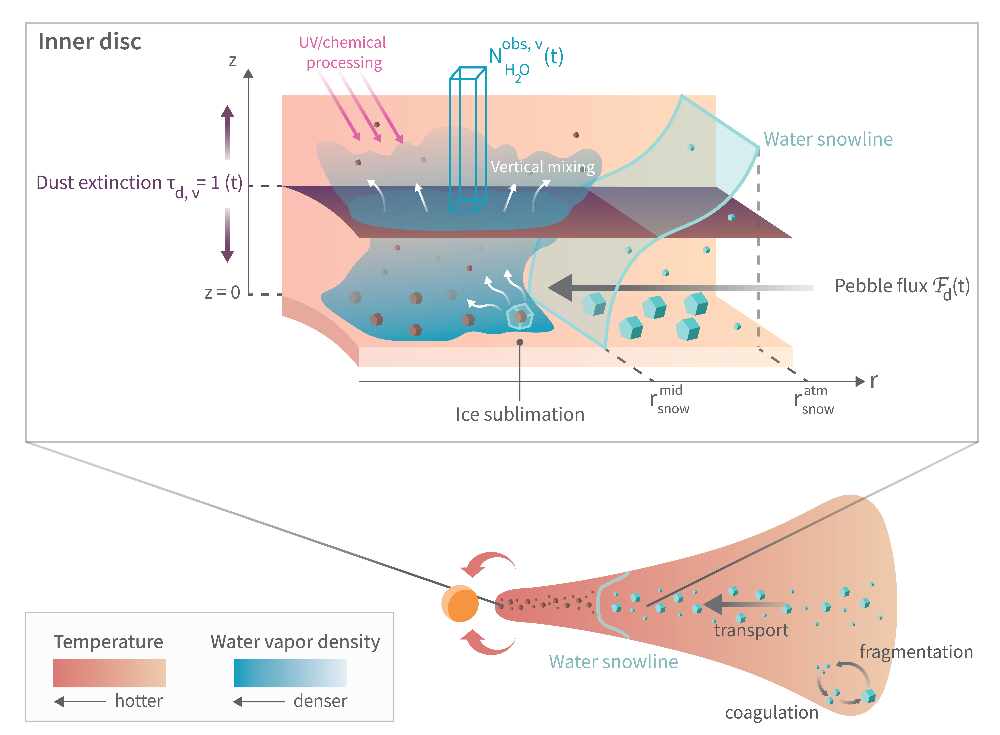
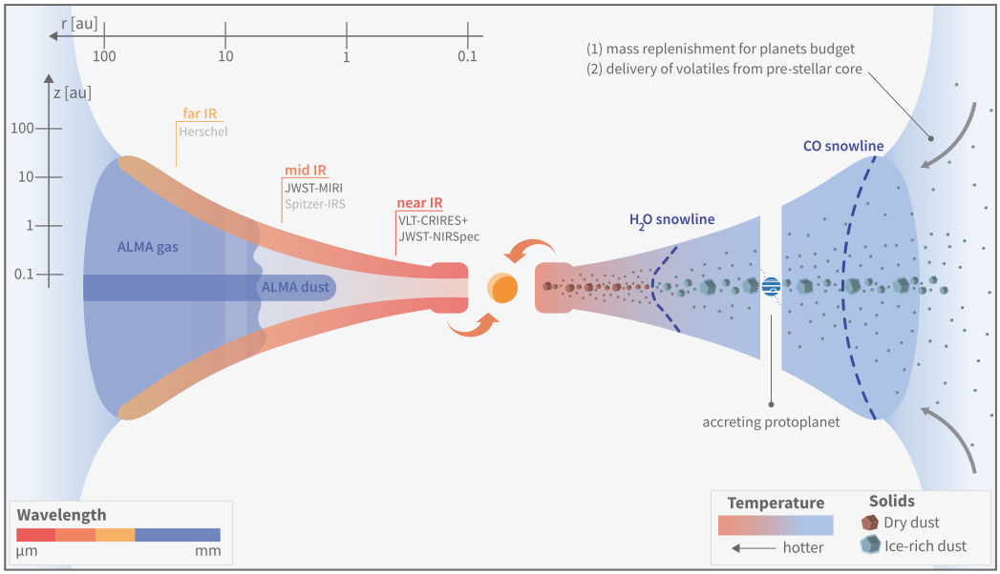
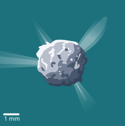
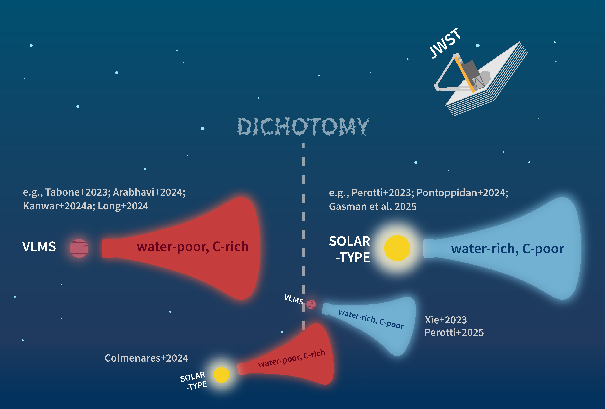
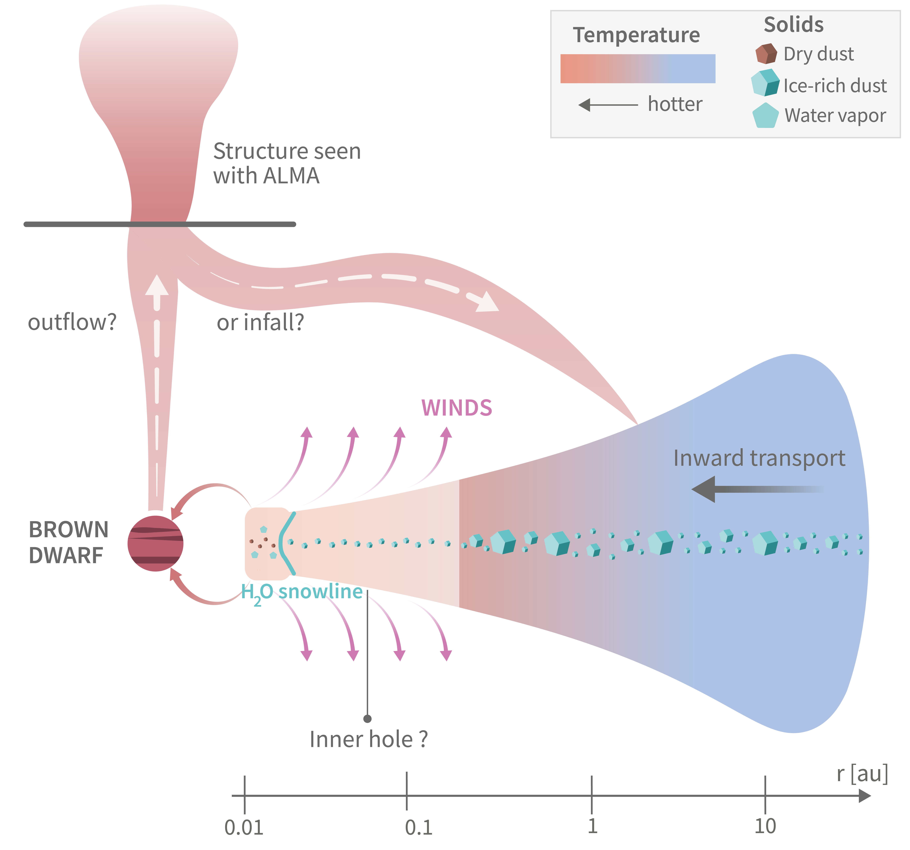
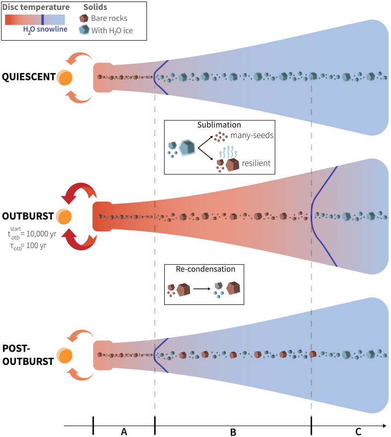

Science design
Overview
In addition to my coding adventures with tiny dust aggregates, I love to design cartoons and schematics for my science. I believe it is so important, for us scientists, to find ways to share complex ideas using simple visuals. I typically use Adobe Illustrator and After Effects. You will find below some designs I made for my work and the work of others. Feel free to use them for your own slides!
If you need some help in designing a schematic/visual abstract for your next awesome paper, don't hesitate to get in touch!
(click to copy my email)
My schematics & cartoons








A deeper dive in some of them
This is a schematic of my third paper, Houge et al. (2025a). It represents the context, idea and method behind our project. The water vapor content we observe with JWST represents but a fraction of the total water reservoir in the protoplanetary disc. This paper was a first step towards a 2D view of water delivery by pebbles, to connect more robustly what we observe in the disc upper layers to icy pebbles drifting through the iceline in the midplane.
I made this cartoon for the DNRF grant application of Michael Küffmeier, to represent the different consequences of an infalling streamer on the structure of a protoplanetary disc.
The style is more graphic - and less dense in information - than a classic schematic for a paper, as its purpose is to present to the reader what is DSTREAM in a glimpse. Let's say it is the business card of the project.
This is the first schematic I made for a client (very formal way to call a great friend in need of a cool schematic). It shows a bunch of processes and concepts relevant to the review written by Perotti et al. (2024). It has been so fun building it from scratch for Giulia, and implementing her feedbacks until we reached the final results.

This is my first design ever! It represents a protoplanetary disc with its dust particles, either dry or covered in ice if located outside of the water snowline (dark blue line). I made this schematic to show how an accretion outburst pushes the snowline outwards and drive the sublimation then re-condensation of water ice, and how that may affect the evolution of dust particles.
This schematic can be found in my first paper. It was even elected Astro Plot of the Week!